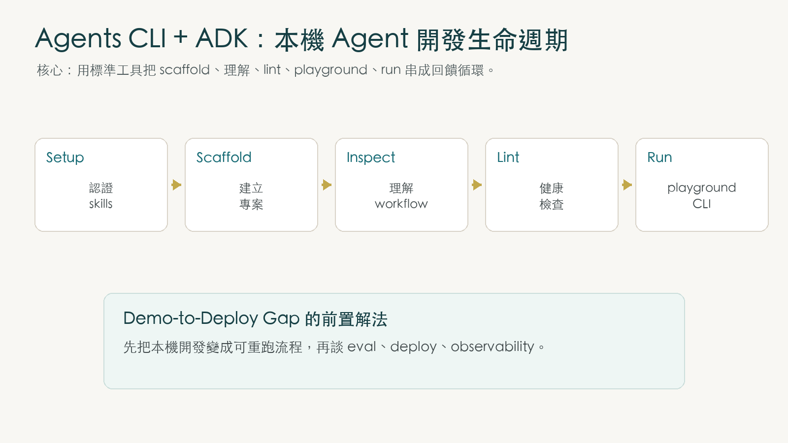

很多 agent 專案失敗，不是因為模型不會回答，而是因為開發流程太像一次性 Demo。你手動建幾個檔案，塞一段 prompt，跑一次看起來能動，就以為完成了。等到要修改、測試、重跑、交給別人接手時，問題才開始浮現。
Agents CLI + ADK Lifecycle Codelab 把焦點放在這條開發生命週期：如何用標準工具建立 agent 專案、理解 graph workflow、檢查健康狀態、在 playground 互動測試，再用 CLI 做快速查詢。

從模型呼叫，升級成開發循環
Codelab 的第一步不是寫 agent，而是先準備認證與工具。你可以用 Gemini API Key，也可以用 Google Cloud ADC 與 Vertex AI。接著用 uvx google-agents-cli setup 安裝 Agents CLI 與一組 domain-specific skills。
這組 skills 的角色很關鍵：它們讓 Antigravity 知道如何 scaffold、build、lint、test agent，而不是每次都從空白目錄猜起。
export GEMINI_API_KEY="your_api_key_here"
export GOOGLE_GENAI_USE_ENTERPRISE=FALSE
uvx google-agents-cli setup這不是單純安裝指令，而是在你的開發環境裡建立一條「agent 專案可以被一致管理」的路。
ADK 2.0 的核心是 graph workflow
Codelab 的範例是建立一個 customer-support-agent：它先判斷使用者問題是否和運送相關，相關就交給 shipping FAQ agent，不相關就禮貌拒答。
這個例子故意很小，但它展示了 ADK 2.0 的核心：agent 應用不是一團 prompt，而是一張圖。圖裡有節點、邊、狀態與路由。
Workflow & Edges
Workflow 定義整體流程，Edge 把 START、分類節點、回覆節點串起來，並依 route 分支。
LlmAgent
宣告式 LLM 節點，負責分類、回答或生成結構化輸出，可搭配 output_schema 控制結果。
Node & Context
Python function 節點處理狀態、資料傳遞與 routing signal，讓流程不是只靠自然語言控制。
App Wrapper
App 包住 root workflow，讓 playground、eval harness、runtime 能以標準方式載入。
這個架構和 Day 3 的 skill 思維其實相通：把隱性的工作流程顯性化，讓它能被檢查、修改與測試。
好的本機開發流程，必須有快速回饋
Agent 專案不能只靠「我問一次看起來有回答」來判斷健康。Codelab 用三種回饋機制建立基本安全感。
- Linting：請 Antigravity 跑
agents-cli lint，檢查 imports、語法與格式一致性。 - Playground：用
agents-cli playground開本機 web UI，互動測試 workflow 的 routing 行為。 - Auto-reload：修改
app/agent.py後，playground 可即時重新載入，縮短修改與驗證之間的距離。
agents-cli lint
agents-cli playground
agents-cli run "How long does standard delivery take?"這裡最重要的不是工具名稱，而是開發節奏：改一點、看結果、再改。Agent engineering 需要這種迭代回饋，否則 prompt、routing 與程式邏輯很快會混成一團。
本機循環是 production 的前置條件
Codelab 收尾提到下一步：用 agents-cli eval run 做評估，用 agents-cli deploy 部署到 Agent Runtime 或 Cloud Run，並串接 Cloud Trace、BigQuery 等 observability 管線。
在此之前，官方也提醒要做 cleanup：停止本機 playground，並移除 scaffold 出來的本機專案目錄。這看似瑣碎，但它提醒你 Agents CLI 管的不只是「啟動」，也包含開發環境的收尾與可重複性。
這和 Day 3 白皮書的「Demo-to-Deploy Gap」完全接上。你不能直接從一次漂亮 demo 跳到 production。你需要先有標準專案結構、可重跑測試、本機 playground、CLI execution，再往 evaluation、deployment、observability 前進。
所以這個 Codelab 的真正價值，是把 agent 從「聊天框裡能回答」推向「工程系統裡能被管理」。這也是 Agents CLI 和 ADK 2.0 的分工：ADK 定義 agent application 的程式結構，Agents CLI 管理它的開發生命週期。
官方 Codelab 步驟對照
上面的文章整理設計意義；以下逐條對齊官方 Codelab 的 10 個 step，方便確認沒有漏掉操作流程。
- Overview：說明本 lab 屬於 Google × Kaggle 5-Day AI Agents 課程，目標是用 Agents CLI 管理本機 agent lifecycle。
- Set up Authentication & Environment：設定 Gemini API Key 或 Google Cloud Application Default Credentials。
- Set up Agents CLI & Skills：安裝 Agents CLI 與相關 skills，並提醒 Antigravity 可能要求 review / approve 計畫或指令。
- Create your Agent Project：用 Antigravity prompt 或
agents-cli scaffold create customer-support-agent --prototype --yes建立專案。 - Explore the Agent Code：閱讀
app/agent.py，理解 tools、nodes、edges、root Workflow 等 ADK 2.0 graph workflow 結構。 - Automated Linting：執行
agents-cli lint，確認專案健康狀態與格式。 - Interactive Testing with the Playground：啟動
agents-cli playground，用本機 web playground 測試 agent，並觀察 auto-reload。 - Command Line Execution：用
agents-cli run "How long does standard delivery take?"做快速 CLI 查詢。 - Cleanup：停止 playground，並移除本機 scaffold 專案目錄，避免留下不需要的資源。
- Summary & Next Steps：總結 setup、scaffold、graph workflow、lint、playground、CLI run，並指向 eval、deploy、observability 等下一步。
來源：Google Codelab「Vibe Coding AI Agents: Managing the Agent Lifecycle with Agents CLI and ADK 2.0」
codelabs.developers.google.com/agents-cli-adk-lifecycle